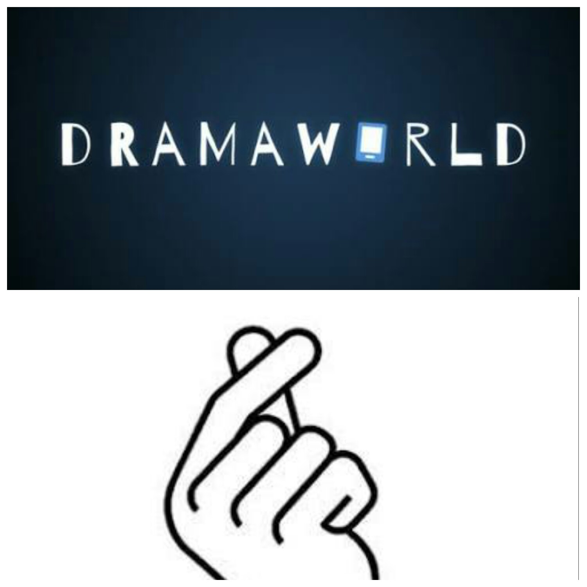
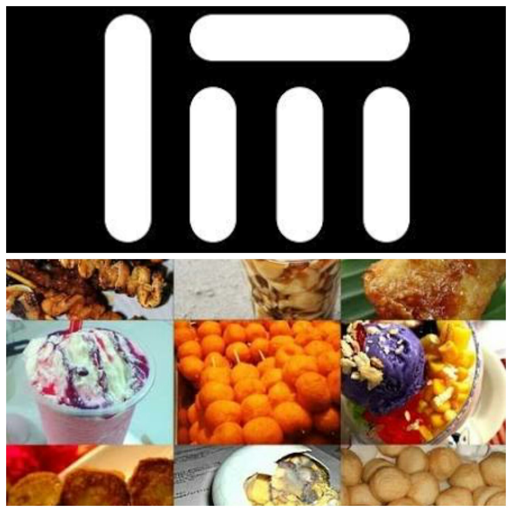
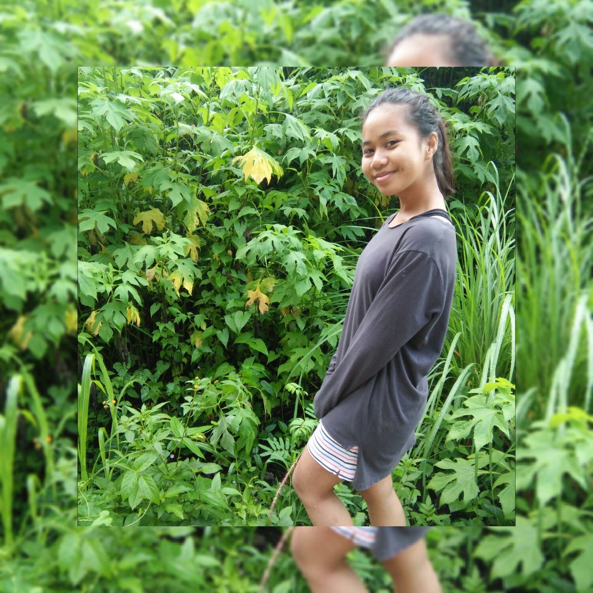

SFHS and ND-RVMCC were the school's I studied for my Junior High School and currently for my Senior High School. Saint Francis High School is a Christian School wherein based from my observation I think half of the population in this Institution are Protestants and I do believe that in their religious life they are more focused on Sacred Scriptures than Scared raditions;the Paron Saint of this School is "St. Francis of Assissi" who is fund of animals.Notre Dame-RVM College of Cotabato is a Catholic School whose Patron Saint is "Venerable Ignacia Del Espirito Santo" in this institution they are practicing a good discipline conduct, the faith of Catholics/Christians to God and the practices of Muslim Girls.
This 3 torists spots are the places I want to go to with my friends and make some adventures. Aside from I am a nature lover it pleases peoples feelings, it has fascinating views and it can make plenty of memories with whom you are with.
Korean Pop and Dramas are one of my stuffs of unnecessary things that I watch to motivate me to something and just a source of fun when I'am not doing anything.
Foods, Music and Dance Video's are one of the things that I like doing. Food is part of our life, Music does something that can change our moods and Dance Video's are the acts of interpreting something or interpreting the message of the song. Food is life of our daily life but I don't know many recipes to cook, I love listenig to musics yet I don't have a good voice to sing it well, and I like watching those Videos but I am not a fast learner of dances.
 "It's Better to Show your Bad Personality. Than to act like an angel full of PLASTICITY" it a quotation from an anonymous person yet I like it becasue I want a person that if they don't like me
don't act like you like me. It relays a message that being a bad person doesn't mean that they don't have goodness in their inner self but it is an act showing the real them. An act of choosing
being them than hiding from a mask. I can say that I am showing/doing it because for me that's the way how I will go on in my path.
Warning: All content's of this site are all from the owner and no one is allowed to use/copy(it is an act of plagiarism)any information inside it unless permitted by the writer.